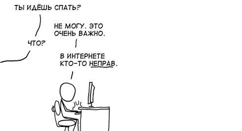

Памятка
Последний день тренировочной недели, как и всегда, мы посвящаем развитию гибкости и растяжке. Кому-то это кажется скучным или ненужным, но только тот, кто давно не растягивался и потерял гибкость, сможет по-настоящему оценить важность этого занятия. ПОДХОДЫ или КРУГИ СЕГОДНЯ НЕ ДЕЛАЕМ!!!
Когда мы только создавали воркаут, то изначально закладывали в его философию идею о том, что на площадке все равны. Не важно, сколько ты тренируешься и что ты умеешь, ты не хуже и не лучше других, и куда важнее тот факт, что сейчас ты пришёл на площадку тренироваться. В конечном итоге, единственный с кем ты соревнуешься, — это ты сам, и если сегодня ты стал лучше, чем был месяц или год назад, значит, ты идёшь верной дорогой. Это были прекрасные времена, когда на тренировках действительно тренировались, когда воркаут был действительно воркаутом (а не гимнастикой, совмещённой с брейком), и когда царила атмосфера дружелюбия и взаимной поддержки.
К сожалению, в какой-то момент мы потеряли контроль над развитием воркаута, в связи с тем, что им начало увлекаться огромное количество людей в разных городах по всей стране. И у многих из них было своё восприятие воркаута, они приносили свои идеи, видоизменяли сущность направления и так далее. Это, конечно же, неизбежно, но в итоге всё идёт к тому, что от первоначальных идей не остаётся и следа. Если честно, то нас уже задолбало немного, когда спрашивают "сколько ты занимаешься" и "какие элементы умеешь", "а покажи и т.д.", а когда узнают, что мы в основном тренируем базу, и не заморачиваемся на гимнастике, то сразу мол "так долго занимаешься и ничего не умеешь". Мы заметили, что обычно такие вопросы можно услышать либо от новичков, либо от тех, кто вообще не занимается. Но чем выше уровень, тем больше понимания того, что ты занимаешься для себя, а не для того чтобы кого-то чем-то удивлять.
Отчасти такие разговоры стали возникать потому, что с приходом соревновательной составляющей в воркаут-культуре стало всё больше школьников и всё меньше людей постарше, всё больше гонки за элементами, всякими финтами и красивыми штуками, и всё меньше тех, кто реально прокачивает тело и дух на турниках, кто заботится о своём здоровье и думает на перспективу. Раньше этого не было, но сейчас есть. И мы с сожалением замечаем, что появляются люди, которые считают себя лучше других только потому, что они умеют какие-то крутые штуки (которые, если честно, даже к воркауту не относятся), а другие эти штуки делать не умеют. И вместо того чтобы делиться своим опытом и знаниями с другими, они поступают совершенно противоположным образом.
Не будем сейчас говорить о том, что многие так называемые "лидеры" воркаута в разных городах ведут не самый здоровый образ жизни, постоянно используют нецензурную лексику и брань в общении, крысячат и лицемерят за спинами других и вообще далеки от того, чтобы быть примерами для подражания... Возможно, это всё следствие того, что воркаут сейчас в моде и популярен, а потому притягивает к себе не совсем "тех" людей.
Будем надеяться, что народ станет мудрее с возрастом, а все "левые" свалят куда-нибудь. Переходим к вопросу об уважении в целом. Тут встает главная беда 21 века, которая заключается в том, что люди общаются в интернете. А в интернете вообще с взаимным уважением друг друга ситуация обстоит очень печальная, потому что твой собеседник находится где-то далеко-далеко, и ты можешь наговорить ему много всего такого, что не сказал бы лично, не особо заботясь о последствиях. Суть этой проблемы в том, что вместо проявления уважения к другим людям и к тому, чем они занимаются, в интернете куда чаще видишь, как одни ребята высмеивают других. Конечно всегда проще крикнуть: "Вот идиоты!", чем потратить время и силы, на то, чтобы объяснить человеку в чём именно заключается его неправота. Впрочем, пытаться кому-либо что-либо доказать в интернете — вообще довольно бессмысленное занятие, и лучше вообще не тратить на это своё время, а сразу пойти спать.

Суть сегодняшнего инфопоста довольно простая - уважайте других людей и тогда они будут уважать вас.